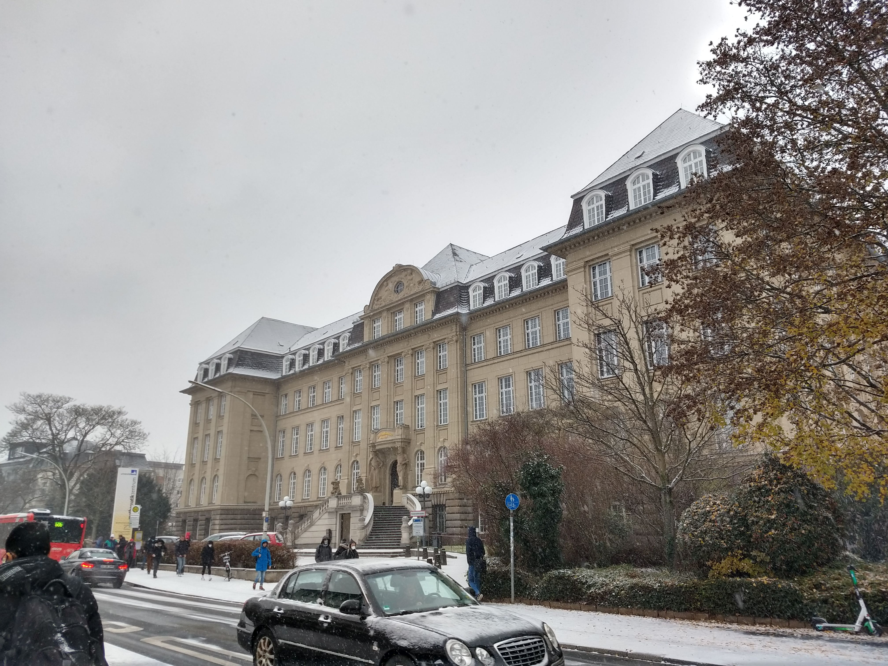

Brian Villegas-Villalpando
Education
M.Sc. in Mathematics
Universität Bonn
Oct 2022 -
BONN, GERMANY
B.Sc. in Applied Mathematics
Universidad Autónoma de Aguascalientes
Aug 2017 - Jul 2022
AGUASCALIENTES, MEXICO
Publications
Note on Generalized Vitali Sets with Respect to Some Arbitrary Deformed Sums.
Villegas-Villalpando, B., & Macías-Díaz, J. E. Reports on Mathematical Physics, 90(3), 377-383. (2022)
Solution Spaces Associated to Continuous or Numerical Models for Which Integrable Functions Are Bounded.
Villegas-Villalpando, B., Macías-Díaz, J. E., & Sheng, Q. Mathematics, 10(11), 1936. (2022)

Research interest
Operator Theory, Spectral Theory
Links
ResearchGate
Google Scholar
ORCiD